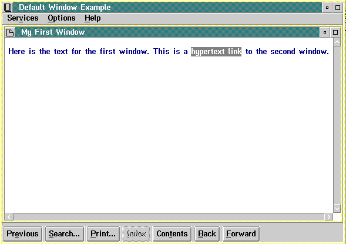

Both the heading tags (:hn.) and the link tag (:link.) have attributes that affect how windows look on a screen. For example, the attributes define:
You do not have to use all the attributes provided by a heading tag to define a window. The following is an example of the minimum tagging required for a window:
:h1 res=001.My First Window:p. Here is the text for the first window.
In this example, :h1. creates a level-1 entry in the Contents window and the title, "My First Window," in the title bar of the default window.
The following figure shows the tagging to produce the two default windows shown in the example that follows the tagging.
:h1 res=001.My First Window :p. Here is the text for the first window. This is a :link reftype=hd res=002. hypertext link :elink. to the second window. :h1 res=002.My Second Window :p. Here is the text for the second window. This is a :link reftype=hd res=001. hypertext link :elink. to the first window.
The following figure shows the compiled version of the tagging shown in the previous figure. "My First Window" is one of the default windows and is bounded by the window "Default Window Example." This window is called a coverpage and provides window controls for the user.

Example of an IPF Default Window
The two windows each have a hypertext link. Selection of the hypertext link in "My First Window" causes the other default window "My Second Window" to display. Each default window has the same characteristics: